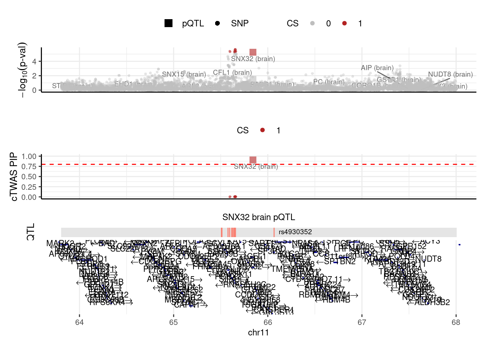
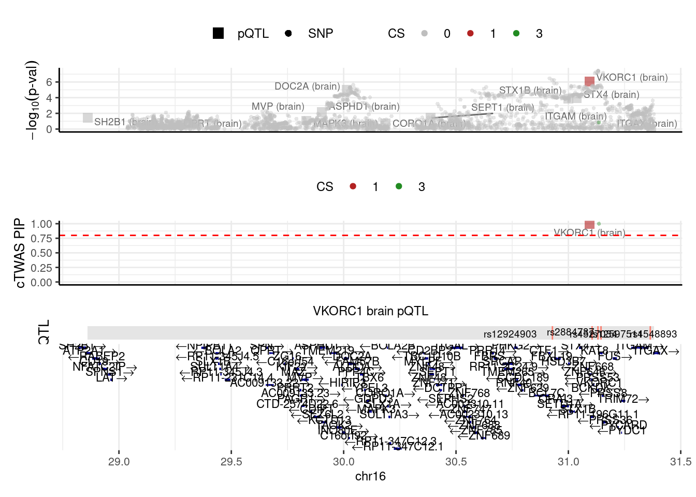
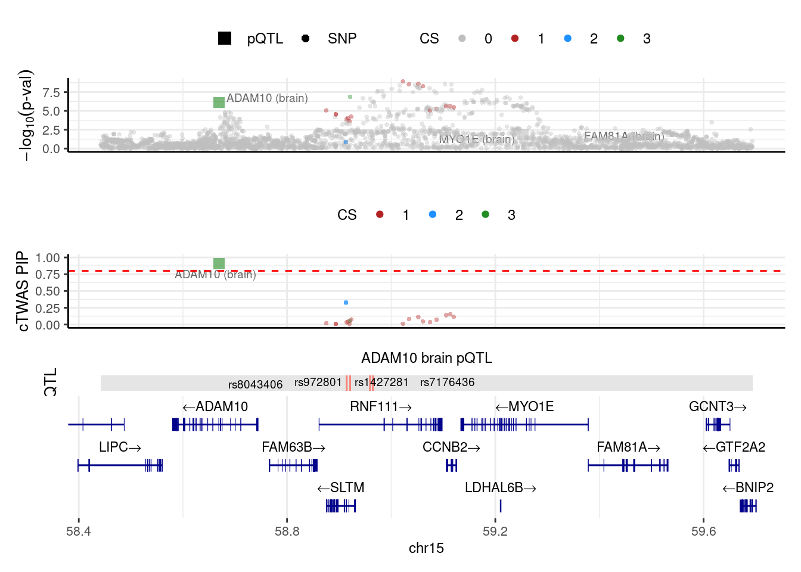

Last updated: 2024-10-01
Checks: 6 1
Knit directory: proteome_alzheimer/
This reproducible R Markdown analysis was created with workflowr (version 1.7.0). The Checks tab describes the reproducibility checks that were applied when the results were created. The Past versions tab lists the development history.
The R Markdown file has unstaged changes. To know which version of
the R Markdown file created these results, you’ll want to first commit
it to the Git repo. If you’re still working on the analysis, you can
ignore this warning. When you’re finished, you can run
wflow_publish to commit the R Markdown file and build the
HTML.
Great job! The global environment was empty. Objects defined in the global environment can affect the analysis in your R Markdown file in unknown ways. For reproduciblity it’s best to always run the code in an empty environment.
The command set.seed(20230414) was run prior to running
the code in the R Markdown file. Setting a seed ensures that any results
that rely on randomness, e.g. subsampling or permutations, are
reproducible.
Great job! Recording the operating system, R version, and package versions is critical for reproducibility.
Nice! There were no cached chunks for this analysis, so you can be confident that you successfully produced the results during this run.
Great job! Using relative paths to the files within your workflowr project makes it easier to run your code on other machines.
Great! You are using Git for version control. Tracking code development and connecting the code version to the results is critical for reproducibility.
The results in this page were generated with repository version 10adb8e. See the Past versions tab to see a history of the changes made to the R Markdown and HTML files.
Note that you need to be careful to ensure that all relevant files for
the analysis have been committed to Git prior to generating the results
(you can use wflow_publish or
wflow_git_commit). workflowr only checks the R Markdown
file, but you know if there are other scripts or data files that it
depends on. Below is the status of the Git repository when the results
were generated:
Ignored files:
Ignored: .Rhistory
Unstaged changes:
Modified: analysis/jansen_1001.Rmd
Note that any generated files, e.g. HTML, png, CSS, etc., are not included in this status report because it is ok for generated content to have uncommitted changes.
These are the previous versions of the repository in which changes were
made to the R Markdown (analysis/jansen_1001.Rmd) and HTML
(docs/jansen_1001.html) files. If you’ve configured a
remote Git repository (see ?wflow_git_remote), click on the
hyperlinks in the table below to view the files as they were in that
past version.
| File | Version | Author | Date | Message |
|---|---|---|---|---|
| Rmd | 10adb8e | XSun | 2024-10-01 | update |
| html | 10adb8e | XSun | 2024-10-01 | update |
Top locus removed GWAS (/project2/guiming/xsun/proteome_alzheimer/data_gwas/jansen.topremoved.RDS)
PredictDB:
all the PredictDB are converted from FUSION weights
library(ctwas)
library(EnsDb.Hsapiens.v86)
ens_db <- EnsDb.Hsapiens.v86
gwas_n <- 472868
E_S_A_mapping <- readRDS("/project2/xinhe/shared_data/multigroup_ctwas/weights/mapping_files/Munro_mapping.RDS")
sum_pve_across_types <- function(ctwas_parameters) {
# Round the group_pve values
pve <- round(ctwas_parameters$group_pve, 4)
pve <- as.data.frame(pve)
# Extract SNP PVE for later use
SNP_pve <- pve["SNP", ]
# Add type and context columns
pve$type <- sapply(rownames(pve), function(x) { unlist(strsplit(x, "[|]"))[1] })
pve$context <- sapply(rownames(pve), function(x) { unlist(strsplit(x, "[|]"))[2] })
# Remove rows with NA values and sort
pve <- na.omit(pve)
pve <- pve[order(rownames(pve)), ]
# Aggregate PVE by type
df_pve <- aggregate(pve$pve, by = list(pve$type), FUN = sum)
colnames(df_pve) <- c("type", "total_pve")
df_pve$total_pve <- round(df_pve$total_pve, 4)
# Add context-specific columns
for (context in unique(pve$context)) {
context_pve <- aggregate(pve$pve, by = list(pve$type, pve$context), FUN = sum)
context_pve <- context_pve[context_pve$Group.2 == context, ]
colnames(context_pve)[3] <- context
df_pve <- merge(df_pve, context_pve[, c("Group.1", context)], by.x = "type", by.y = "Group.1", all.x = TRUE)
}
# Insert SNP PVE
SNP_row <- c("SNP", SNP_pve, rep(0, ncol(df_pve) - 2))
df_pve <- rbind(df_pve, SNP_row)
# Convert to numeric except for the type column
df_pve[, -1] <- lapply(df_pve[, -1], as.numeric)
# Sum all rows and add a sum_pve row
sum_row <- colSums(df_pve[, -1], na.rm = TRUE)
sum_row <- c("total_pve", sum_row)
df_pve <- rbind(df_pve, sum_row)
# Clean up row names and return
row.names(df_pve) <- NULL
return(df_pve)
}trait <- "AD_protein"
results_dir_protein <- "/project/xinhe/xsun/AD/1.jansen/output/protein/"
weights_protein <- readRDS(paste0(results_dir_protein,trait,".preprocessed.weights.RDS"))
region_info_protein <- readRDS(paste0(results_dir_protein,trait,".region_info.RDS"))
snp_map_protein <- readRDS(paste0(results_dir_protein,trait,".snp_map.RDS"))
LD_map_protein <- readRDS(paste0(results_dir_protein,trait,".LD_map.RDS"))
ctwas_res_protein <- readRDS(paste0(results_dir_protein,trait,".ctwas.res.RDS"))
z_gene_protein <- ctwas_res_protein$z_gene
param_protein <- ctwas_res_protein$param
finemap_res_protein <- ctwas_res_protein$finemap_res
boundary_genes_protein <- ctwas_res_protein$boundary_genes
region_data_protein <- ctwas_res_protein$region_data
screen_res_protein <- ctwas_res_protein$screen_res
make_convergence_plots(param_protein, gwas_n)
| Version | Author | Date |
|---|---|---|
| 10adb8e | XSun | 2024-10-01 |
ctwas_parameters_protein <- summarize_param(param_protein, gwas_n)
para_protein <- sum_pve_across_types(ctwas_parameters_protein)
DT::datatable(para_protein,caption = htmltools::tags$caption( style = 'caption-side: topleft; text-align = left; color:black;','Heritability contribution by contexts'),options = list(pageLength = 10) )finemap_res_protein <- ctwas_res_protein$finemap_res
finemap_res_protein$molecular_id <- get_molecular_ids(finemap_res_protein)
finemap_res_protein <- anno_finemap_res(finemap_res_protein,
snp_map = snp_map_protein,
mapping_table = E_S_A_mapping,
add_gene_annot = TRUE,
map_by = "molecular_id",
drop_unmapped = TRUE,
add_position = TRUE,
use_gene_pos = "mid")2024-10-01 13:07:43 INFO::Annotating fine-mapping result ...
2024-10-01 13:07:43 INFO::Map molecular traits to genes
2024-10-01 13:07:43 INFO::Drop 5 unmapped molecular IDs
2024-10-01 13:07:45 INFO::Add gene positions
2024-10-01 13:07:45 INFO::Add SNP positionscombined_pip_by_type_protein <- combine_gene_pips(finemap_res =finemap_res_protein,
group_by = "gene_name",
by = "type",
method = "combine_cs",
filter_cs = T )2024-10-01 13:07:58 INFO::Limit gene results to credible setsDT::datatable(combined_pip_by_type_protein[combined_pip_by_type_protein$combined_pip>0.8,],caption = htmltools::tags$caption( style = 'caption-side: topleft; text-align = left; color:black;','Combined PIP by omics, credible set filtered'),options = list(pageLength = 10) )There are some boundary genes with high pip (PIP > 0.5)
boundary_genes_protein <- ctwas_res_protein$boundary_genes
high_PIP_finemap_gene_res_protein <- subset(ctwas_res_protein$finemap_res, group != "SNP" & susie_pip > 0.5 & cs_index != 0)
high_PIP_genes_protein <- unique(high_PIP_finemap_gene_res_protein$id)
selected_boundary_genes <- boundary_genes_protein[boundary_genes_protein$id %in% high_PIP_genes_protein, , drop=FALSE]
DT::datatable(selected_boundary_genes,caption = htmltools::tags$caption( style = 'caption-side: topleft; text-align = left; color:black;','Boundary genes with high PIPs'),options = list(pageLength = 10) )We merge the regions that the boundary genes span
print("before region merging")[1] "before region merging"make_locusplot(finemap_res = finemap_res_protein,
region_id = "11_63804569_65898631",
ens_db = ens_db,
weights = weights_protein,
highlight_pip = 0.8,
filter_protein_coding_genes = T,
filter_cs = T,
color_pval_by = "cs",
color_pip_by = "cs")2024-10-01 13:07:59 INFO::Limit to protein coding genes
2024-10-01 13:07:59 INFO::focal id: ENSG00000172803|brain_pQTL
2024-10-01 13:07:59 INFO::focal molecular trait: SNX32 brain pQTL
2024-10-01 13:07:59 INFO::Range of locus: chr11:63805235-65896962
2024-10-01 13:07:59 INFO::focal molecular trait QTL positions: 65507605,65513107,65577516,65594820,65617324,65623739,65637273,65646557,65647260,65656564
2024-10-01 13:07:59 INFO::Limit PIPs to credible sets
| Version | Author | Date |
|---|---|---|
| 10adb8e | XSun | 2024-10-01 |
print("after region merging")[1] "after region merging"load("/project/xinhe/xsun/AD/1.jansen/postprocess/RM_protein.rdata")
make_locusplot(finemap_res = finemap_merged_regions_res,
region_id = "11_63804569_68005825",
ens_db = ens_db,
weights = weights_protein,
highlight_pip = 0.8,
filter_protein_coding_genes = T,
filter_cs = T,
color_pval_by = "cs",
color_pip_by = "cs")2024-10-01 13:08:02 INFO::Limit to protein coding genes
2024-10-01 13:08:02 INFO::focal id: ENSG00000172803|brain_pQTL
2024-10-01 13:08:02 INFO::focal molecular trait: SNX32 brain pQTL
2024-10-01 13:08:02 INFO::Range of locus: chr11:63805235-68005480
2024-10-01 13:08:02 INFO::focal molecular trait QTL positions: 65507605,65513107,65577516,65594820,65617324,65623739,65637273,65646557,65647260,65656564,66066993
2024-10-01 13:08:02 INFO::Limit PIPs to credible sets
| Version | Author | Date |
|---|---|---|
| 10adb8e | XSun | 2024-10-01 |
trait <- "AD_ep"
results_dir_epjoint <- "/project/xinhe/xsun/AD/1.jansen/output/epjoint/"
weights_epjoint <- readRDS(paste0(results_dir_epjoint,trait,".preprocessed.weights.RDS"))
region_info_epjoint <- readRDS(paste0(results_dir_epjoint,trait,".region_info.RDS"))
snp_map_epjoint <- readRDS(paste0(results_dir_epjoint,trait,".snp_map.RDS"))
LD_map_epjoint <- readRDS(paste0(results_dir_epjoint,trait,".LD_map.RDS"))
ctwas_res_epjoint <- readRDS(paste0(results_dir_epjoint,trait,".ctwas.res.RDS"))
z_gene_epjoint <- ctwas_res_epjoint$z_gene
param_epjoint <- ctwas_res_epjoint$param
finemap_res_epjoint <- ctwas_res_epjoint$finemap_res
boundary_genes_epjoint <- ctwas_res_epjoint$boundary_genes
region_data_epjoint <- ctwas_res_epjoint$region_data
screen_res_epjoint <- ctwas_res_epjoint$screen_res
make_convergence_plots(param_epjoint, gwas_n)
| Version | Author | Date |
|---|---|---|
| 10adb8e | XSun | 2024-10-01 |
ctwas_parameters_epjoint <- summarize_param(param_epjoint, gwas_n)
para_epjoint <- sum_pve_across_types(ctwas_parameters_epjoint)
DT::datatable(para_epjoint,caption = htmltools::tags$caption( style = 'caption-side: topleft; text-align = left; color:black;','Heritability contribution by contexts'),options = list(pageLength = 10) )finemap_res_epjoint <- ctwas_res_epjoint$finemap_res
finemap_res_epjoint$molecular_id <- get_molecular_ids(finemap_res_epjoint)
finemap_res_epjoint <- anno_finemap_res(finemap_res_epjoint,
snp_map = snp_map_epjoint,
mapping_table = E_S_A_mapping,
add_gene_annot = TRUE,
map_by = "molecular_id",
drop_unmapped = TRUE,
add_position = TRUE,
use_gene_pos = "mid")2024-10-01 13:08:19 INFO::Annotating fine-mapping result ...
2024-10-01 13:08:19 INFO::Map molecular traits to genes
2024-10-01 13:08:19 INFO::Drop 18 unmapped molecular IDs
2024-10-01 13:08:21 INFO::Add gene positions
2024-10-01 13:08:21 INFO::Add SNP positionscombined_pip_by_type_epjoint <- combine_gene_pips(finemap_res =finemap_res_epjoint,
group_by = "gene_name",
by = "type",
method = "combine_cs",
filter_cs = T )2024-10-01 13:08:32 INFO::Limit gene results to credible setsDT::datatable(combined_pip_by_type_epjoint[combined_pip_by_type_epjoint$combined_pip>0.8,],caption = htmltools::tags$caption( style = 'caption-side: topleft; text-align = left; color:black;','Combined PIP by omics, credible set filtered'),options = list(pageLength = 10) )There are some boundary genes with high pip (PIP > 0.5)
boundary_genes_epjoint <- ctwas_res_epjoint$boundary_genes
high_PIP_finemap_gene_res_epjoint <- subset(ctwas_res_epjoint$finemap_res, group != "SNP" & susie_pip > 0.5 & cs_index != 0)
high_PIP_genes_epjoint <- unique(high_PIP_finemap_gene_res_epjoint$id)
selected_boundary_genes <- boundary_genes_epjoint[boundary_genes_epjoint$id %in% high_PIP_genes_epjoint, , drop=FALSE]
DT::datatable(selected_boundary_genes,caption = htmltools::tags$caption( style = 'caption-side: topleft; text-align = left; color:black;','Boundary genes with high PIPs'),options = list(pageLength = 10) )We merge the regions that the boundary genes span
print("before region merging")[1] "before region merging"make_locusplot(finemap_res = finemap_res_epjoint,
region_id = "6_31571218_32682664",
ens_db = ens_db,
weights = weights_epjoint,
highlight_pip = 0.8,
filter_protein_coding_genes = T,
filter_cs = T,
color_pval_by = "cs",
color_pip_by = "cs")2024-10-01 13:08:32 INFO::Limit to protein coding genes
2024-10-01 13:08:32 INFO::focal id: ENSG00000196126|brain_eQTL
2024-10-01 13:08:32 INFO::focal molecular trait: HLA-DRB1 brain eQTL
2024-10-01 13:08:32 INFO::Range of locus: chr6:31571871-32682543
2024-10-01 13:08:33 INFO::focal molecular trait QTL positions: 32050544,32062687,32066177,32066220,32071893,32570839,32575369,32577889,32578052
2024-10-01 13:08:33 INFO::Limit PIPs to credible sets
| Version | Author | Date |
|---|---|---|
| 10adb8e | XSun | 2024-10-01 |
print("after region merging")[1] "after region merging"load("/project/xinhe/xsun/AD/1.jansen/postprocess/RM_epjoint.rdata")
make_locusplot(finemap_res = finemap_merged_regions_res,
region_id = "6_31571218_33236497",
ens_db = ens_db,
weights = weights_epjoint,
highlight_pip = 0.8,
filter_protein_coding_genes = T,
filter_cs = T,
color_pval_by = "cs",
color_pip_by = "cs")2024-10-01 13:08:35 INFO::Limit to protein coding genes
2024-10-01 13:08:35 INFO::focal id: ENSG00000196126|brain_eQTL
2024-10-01 13:08:35 INFO::focal molecular trait: HLA-DRB1 brain eQTL
2024-10-01 13:08:35 INFO::Range of locus: chr6:31571871-33236275
2024-10-01 13:08:35 INFO::focal molecular trait QTL positions: 32050544,32062687,32066177,32066220,32071893,32570839,32575369,32577889,32578052,32804299,32804414,32804798,32917857,32921774
2024-10-01 13:08:35 INFO::Limit PIPs to credible sets
| Version | Author | Date |
|---|---|---|
| 10adb8e | XSun | 2024-10-01 |
print("before region merging")[1] "before region merging"make_locusplot(finemap_res = finemap_res_epjoint,
region_id = "11_63804569_65898631",
ens_db = ens_db,
weights = weights_epjoint,
highlight_pip = 0.8,
filter_protein_coding_genes = T,
filter_cs = T,
color_pval_by = "cs",
color_pip_by = "cs")2024-10-01 13:08:38 INFO::Limit to protein coding genes
2024-10-01 13:08:38 INFO::focal id: ENSG00000172803|brain_pQTL
2024-10-01 13:08:38 INFO::focal molecular trait: SNX32 brain pQTL
2024-10-01 13:08:38 INFO::Range of locus: chr11:63805235-66060118
2024-10-01 13:08:38 INFO::focal molecular trait QTL positions: 65507605,65513107,65577516,65594820,65617324,65623739,65637273,65646557,65647260,65656564
2024-10-01 13:08:38 INFO::Limit PIPs to credible sets
| Version | Author | Date |
|---|---|---|
| 10adb8e | XSun | 2024-10-01 |
print("after region merging")[1] "after region merging"load("/project/xinhe/xsun/AD/1.jansen/postprocess/RM_epjoint.rdata")
make_locusplot(finemap_res = finemap_merged_regions_res,
region_id = "11_63804569_68005825",
ens_db = ens_db,
weights = weights_epjoint,
highlight_pip = 0.8,
filter_protein_coding_genes = T,
filter_cs = T,
color_pval_by = "cs",
color_pip_by = "cs")2024-10-01 13:08:42 INFO::Limit to protein coding genes
2024-10-01 13:08:42 INFO::focal id: ENSG00000172803|brain_pQTL
2024-10-01 13:08:42 INFO::focal molecular trait: SNX32 brain pQTL
2024-10-01 13:08:42 INFO::Range of locus: chr11:63805235-68184446
2024-10-01 13:08:43 INFO::focal molecular trait QTL positions: 65507605,65513107,65577516,65594820,65617324,65623739,65637273,65646557,65647260,65656564,66066993
2024-10-01 13:08:43 INFO::Limit PIPs to credible sets
| Version | Author | Date |
|---|---|---|
| 10adb8e | XSun | 2024-10-01 |
print("before region merging")[1] "before region merging"make_locusplot(finemap_res = finemap_res_epjoint,
region_id = "14_91296860_93132299",
ens_db = ens_db,
weights = weights_epjoint,
highlight_pip = 0.8,
filter_protein_coding_genes = T,
filter_cs = T,
color_pval_by = "cs",
color_pip_by = "cs")2024-10-01 13:08:46 INFO::Limit to protein coding genes
2024-10-01 13:08:46 INFO::focal id: ENSG00000100599|brain_eQTL
2024-10-01 13:08:46 INFO::focal molecular trait: RIN3 brain eQTL
2024-10-01 13:08:46 INFO::Range of locus: chr14:91143034-93132115
2024-10-01 13:08:46 INFO::focal molecular trait QTL positions: 92922442,92922542,92927655,92958612,92959216,93011368,93120719
2024-10-01 13:08:46 INFO::Limit PIPs to credible sets
| Version | Author | Date |
|---|---|---|
| 10adb8e | XSun | 2024-10-01 |
print("after region merging")[1] "after region merging"load("/project/xinhe/xsun/AD/1.jansen/postprocess/RM_epjoint.rdata")
make_locusplot(finemap_res = finemap_merged_regions_res,
region_id = "14_91296860_94325285",
ens_db = ens_db,
weights = weights_epjoint,
highlight_pip = 0.8,
filter_protein_coding_genes = T,
filter_cs = T,
color_pval_by = "cs",
color_pip_by = "cs")2024-10-01 13:08:48 INFO::Limit to protein coding genes
2024-10-01 13:08:48 INFO::focal id: ENSG00000100599|brain_eQTL
2024-10-01 13:08:48 INFO::focal molecular trait: RIN3 brain eQTL
2024-10-01 13:08:48 INFO::Range of locus: chr14:91143034-94324163
2024-10-01 13:08:48 INFO::focal molecular trait QTL positions: 92922442,92922542,92927655,92958612,92959216,93011368,93120719,93170901
2024-10-01 13:08:48 INFO::Limit PIPs to credible sets
| Version | Author | Date |
|---|---|---|
| 10adb8e | XSun | 2024-10-01 |
[1] "the number of genes reported by protein only setting = 6"[1] "the number of genes reported by epjoint setting = 10"print("locus plot from protein setting")[1] "locus plot from protein setting"make_locusplot(finemap_res = finemap_res_protein,
region_id = "16_29036613_31382943",
ens_db = ens_db,
weights = weights_epjoint,
highlight_pip = 0.8,
filter_protein_coding_genes = T,
filter_cs = T,
color_pval_by = "cs",
color_pip_by = "cs")2024-10-01 13:08:50 INFO::Limit to protein coding genes
2024-10-01 13:08:50 INFO::focal id: ENSG00000167397|brain_pQTL
2024-10-01 13:08:50 INFO::focal molecular trait: VKORC1 brain pQTL
2024-10-01 13:08:50 INFO::Range of locus: chr16:28860306-31380696
2024-10-01 13:08:50 INFO::focal molecular trait QTL positions: 30928970,31105554,31131614,31145219,31364493
2024-10-01 13:08:50 INFO::Limit PIPs to credible sets
| Version | Author | Date |
|---|---|---|
| 10adb8e | XSun | 2024-10-01 |
print("locus plot from epjoint setting")[1] "locus plot from epjoint setting"make_locusplot(finemap_res = finemap_res_epjoint,
region_id = "16_29036613_31382943",
ens_db = ens_db,
weights = weights_epjoint,
highlight_pip = 0.8,
filter_protein_coding_genes = T,
filter_cs = T,
color_pval_by = "cs",
color_pip_by = "cs")2024-10-01 13:08:53 INFO::Limit to protein coding genes
2024-10-01 13:08:53 INFO::focal id: ENSG00000103510|brain_eQTL
2024-10-01 13:08:53 INFO::focal molecular trait: KAT8 brain eQTL
2024-10-01 13:08:53 INFO::Range of locus: chr16:28860306-31380696
2024-10-01 13:08:53 INFO::focal molecular trait QTL positions: 30979818,31014179,31122571,31132250,31133449,31145219,31334236
2024-10-01 13:08:53 INFO::Limit PIPs to credible sets
| Version | Author | Date |
|---|---|---|
| 10adb8e | XSun | 2024-10-01 |
print("locus plot from protein setting")[1] "locus plot from protein setting"make_locusplot(finemap_res = finemap_res_protein,
region_id = "11_63804569_65898631",
ens_db = ens_db,
weights = weights_epjoint,
highlight_pip = 0.8,
filter_protein_coding_genes = T,
filter_cs = T,
color_pval_by = "cs",
color_pip_by = "cs")2024-10-01 13:08:55 INFO::Limit to protein coding genes
2024-10-01 13:08:55 INFO::focal id: ENSG00000172803|brain_pQTL
2024-10-01 13:08:55 INFO::focal molecular trait: SNX32 brain pQTL
2024-10-01 13:08:55 INFO::Range of locus: chr11:63805235-65896962
2024-10-01 13:08:56 INFO::focal molecular trait QTL positions: 65507605,65513107,65577516,65594820,65617324,65623739,65637273,65646557,65647260,65656564
2024-10-01 13:08:56 INFO::Limit PIPs to credible sets
| Version | Author | Date |
|---|---|---|
| 10adb8e | XSun | 2024-10-01 |
print("locus plot from epjoint setting")[1] "locus plot from epjoint setting"make_locusplot(finemap_res = finemap_res_epjoint,
region_id = "11_63804569_65898631",
ens_db = ens_db,
weights = weights_epjoint,
highlight_pip = 0.8,
filter_protein_coding_genes = T,
filter_cs = T,
color_pval_by = "cs",
color_pip_by = "cs")2024-10-01 13:08:58 INFO::Limit to protein coding genes
2024-10-01 13:08:58 INFO::focal id: ENSG00000172803|brain_pQTL
2024-10-01 13:08:58 INFO::focal molecular trait: SNX32 brain pQTL
2024-10-01 13:08:58 INFO::Range of locus: chr11:63805235-66060118
2024-10-01 13:08:58 INFO::focal molecular trait QTL positions: 65507605,65513107,65577516,65594820,65617324,65623739,65637273,65646557,65647260,65656564
2024-10-01 13:08:58 INFO::Limit PIPs to credible sets
| Version | Author | Date |
|---|---|---|
| 10adb8e | XSun | 2024-10-01 |
print("locus plot from protein setting")[1] "locus plot from protein setting"make_locusplot(finemap_res = finemap_res_protein,
region_id = "15_58441366_59694116",
ens_db = ens_db,
weights = weights_epjoint,
highlight_pip = 0.8,
filter_protein_coding_genes = T,
filter_cs = T,
color_pval_by = "cs",
color_pip_by = "cs")2024-10-01 13:09:00 INFO::Limit to protein coding genes
2024-10-01 13:09:00 INFO::focal id: ENSG00000137845|brain_pQTL
2024-10-01 13:09:00 INFO::focal molecular trait: ADAM10 brain pQTL
2024-10-01 13:09:00 INFO::Range of locus: chr15:58442232-59694103
2024-10-01 13:09:00 INFO::focal molecular trait QTL positions: 58914632,58921198,58959273,58964931
2024-10-01 13:09:00 INFO::Limit PIPs to credible sets
print("locus plot from epjoint setting")[1] "locus plot from epjoint setting"make_locusplot(finemap_res = finemap_res_epjoint,
region_id = "15_58441366_59694116",
ens_db = ens_db,
weights = weights_epjoint,
highlight_pip = 0.8,
filter_protein_coding_genes = T,
filter_cs = T,
color_pval_by = "cs",
color_pip_by = "cs")2024-10-01 13:09:02 INFO::Limit to protein coding genes
2024-10-01 13:09:02 INFO::focal id: ENSG00000137776|brain_eQTL
2024-10-01 13:09:02 INFO::focal molecular trait: SLTM brain eQTL
2024-10-01 13:09:02 INFO::Range of locus: chr15:58442232-59694103
2024-10-01 13:09:02 INFO::focal molecular trait QTL positions: 58779641,58781095,59115995,59590597
2024-10-01 13:09:02 INFO::Limit PIPs to credible sets
sessionInfo()R version 4.2.0 (2022-04-22)
Platform: x86_64-pc-linux-gnu (64-bit)
Running under: CentOS Linux 7 (Core)
Matrix products: default
BLAS/LAPACK: /software/openblas-0.3.13-el7-x86_64/lib/libopenblas_haswellp-r0.3.13.so
locale:
[1] C
attached base packages:
[1] stats4 stats graphics grDevices utils datasets methods
[8] base
other attached packages:
[1] EnsDb.Hsapiens.v86_2.99.0 ensembldb_2.20.2
[3] AnnotationFilter_1.20.0 GenomicFeatures_1.48.3
[5] AnnotationDbi_1.58.0 Biobase_2.56.0
[7] GenomicRanges_1.48.0 GenomeInfoDb_1.39.9
[9] IRanges_2.30.0 S4Vectors_0.34.0
[11] BiocGenerics_0.42.0 ctwas_0.4.14
loaded via a namespace (and not attached):
[1] colorspace_2.0-3 rjson_0.2.21
[3] ellipsis_0.3.2 rprojroot_2.0.3
[5] XVector_0.36.0 locuszoomr_0.2.1
[7] fs_1.5.2 rstudioapi_0.13
[9] farver_2.1.0 DT_0.22
[11] ggrepel_0.9.1 bit64_4.0.5
[13] fansi_1.0.3 xml2_1.3.3
[15] codetools_0.2-18 logging_0.10-108
[17] cachem_1.0.6 knitr_1.39
[19] jsonlite_1.8.0 workflowr_1.7.0
[21] Rsamtools_2.12.0 dbplyr_2.1.1
[23] png_0.1-7 readr_2.1.2
[25] compiler_4.2.0 httr_1.4.3
[27] assertthat_0.2.1 Matrix_1.5-3
[29] fastmap_1.1.0 lazyeval_0.2.2
[31] cli_3.6.1 later_1.3.0
[33] htmltools_0.5.2 prettyunits_1.1.1
[35] tools_4.2.0 gtable_0.3.0
[37] glue_1.6.2 GenomeInfoDbData_1.2.8
[39] dplyr_1.1.4 rappdirs_0.3.3
[41] Rcpp_1.0.12 jquerylib_0.1.4
[43] vctrs_0.6.5 Biostrings_2.64.0
[45] rtracklayer_1.56.0 crosstalk_1.2.0
[47] xfun_0.41 stringr_1.5.1
[49] lifecycle_1.0.4 irlba_2.3.5
[51] restfulr_0.0.14 XML_3.99-0.14
[53] zlibbioc_1.42.0 zoo_1.8-10
[55] scales_1.3.0 gggrid_0.2-0
[57] hms_1.1.1 promises_1.2.0.1
[59] MatrixGenerics_1.8.0 ProtGenerics_1.28.0
[61] parallel_4.2.0 SummarizedExperiment_1.26.1
[63] LDlinkR_1.2.3 yaml_2.3.5
[65] curl_4.3.2 memoise_2.0.1
[67] ggplot2_3.5.1 sass_0.4.1
[69] biomaRt_2.54.1 stringi_1.7.6
[71] RSQLite_2.3.1 highr_0.9
[73] BiocIO_1.6.0 filelock_1.0.2
[75] BiocParallel_1.30.3 rlang_1.1.2
[77] pkgconfig_2.0.3 matrixStats_0.62.0
[79] bitops_1.0-7 evaluate_0.15
[81] lattice_0.20-45 purrr_1.0.2
[83] labeling_0.4.2 GenomicAlignments_1.32.0
[85] htmlwidgets_1.5.4 cowplot_1.1.1
[87] bit_4.0.4 tidyselect_1.2.0
[89] magrittr_2.0.3 R6_2.5.1
[91] generics_0.1.2 DelayedArray_0.22.0
[93] DBI_1.2.2 withr_2.5.0
[95] pgenlibr_0.3.3 pillar_1.9.0
[97] whisker_0.4 KEGGREST_1.36.3
[99] RCurl_1.98-1.7 mixsqp_0.3-43
[101] tibble_3.2.1 crayon_1.5.1
[103] utf8_1.2.2 BiocFileCache_2.4.0
[105] plotly_4.10.0 tzdb_0.4.0
[107] rmarkdown_2.25 progress_1.2.2
[109] grid_4.2.0 data.table_1.14.2
[111] blob_1.2.3 git2r_0.30.1
[113] digest_0.6.29 tidyr_1.3.0
[115] httpuv_1.6.5 munsell_0.5.0
[117] viridisLite_0.4.0 bslib_0.3.1